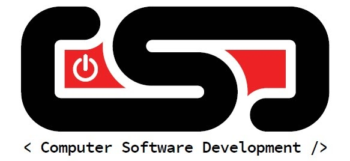

Program Overview
This class will teach you the fundamentals of
Computer Programming and Web development. It
can be taken as a one-year program, but the full course
of instruction covers 2 years. One year emphasises
traditional programming, while to other focuses on
Web development.
Program Breakdown
| Year A |
Year B |
- Textbooks
- Grok Learning Website
- The Linux Command Line
- The Absolute Beginner's Guide to Python Programming
- Android Programming The Big Nerd Ranch Guide
- Linux Operating System
- History and Terminology of Linux
- Linux Command Line Basics
- Open Source Software Concepts
- Program Design
- Software Development Cycle
- Design Tools - Flowcharts and Pseudocode
- Programming Languages Overview
- Procedural Programming Elements
- Structured Design Principles
- GitHub Version Control System
- Documentation - Best Practices
- Collaborative Programming
- Virtual Machines - Concepts and Usage
- Python Programming
- IDE Fundamentals
- Input and Output Statements
- Making Calculations
- Selection Structures
- Loop Structures
- Program Data Handling
- Functions
- File Storage
- Exception Handling
- GUI Design using tkinter
- Mobile App Development withKivy
- Lab Projects
- Final Project
|
- Textbooks
- HTML5, CSS, and Javascript 6th edition
- Database Systems Design, Implementation, & Management 13th editiion
- Introductory Activities
- Intro To algorithms
- Intro to Design
- Linux Basics
- SQL and Database Administration
- Database Concepts
- Database Systems
- Data Models
- Design Concepts
- Relational Database Model
- Entity Relationship Modeling
- Database Implementation
- Intro to Structured Query Language(SQL)
- Advanced SQL
- Database Design
- HTML
- HTML Level 1
- Getting Started with HTML5
- Getting Started with CSS
- HTML Level 2
- Designing a page layout
- Graphic Design with CSS
- Designing for the Mobile Web
- HTML Level 3
- Working with Tables and Columns
- Designing a Web Form
- Enhancing a Website with Multimedia
- Getting Started with Javascript
- Exploring Arrays, Loops, and Conditionals
- Working with Events and Styles
- Working with Document Nodes and Style Sheets
- Programming for Web Forms
- Exploring Object-Based Programming
- Portfolio Website Final Project
|
Reviews
Totally the best class I ever skipped!
- Ferris Bueller
Most Illogical. Yet an enlightening experience.
- Mister Spock
I loved it! Three Thumbs up!
- Zaphod Beeblebrox
I had so much fun I took it twice!
- The Doctor